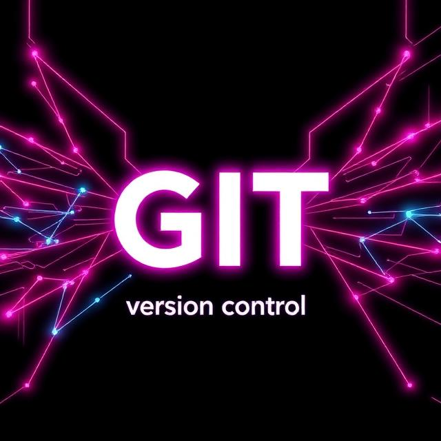
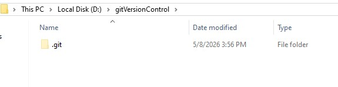

Git branching (RESEARCHING)
Prapas K : 2025, 1 JAN

What is Git ?
Git is version control for manage your changes history each version (commit) of your file.
How it works ?
Git create new file instead let you create new file with the whole same data again,
so every commit Git will create new file then records only where file it changes (difference, delta) from previous commit state,
then each commit is given a unique reference (a commit hash) of each commit to you.
POV firstDraft.ps secondDraft.ps secondFinal.ps secondFinalV1.ps secondFinalllllV2.ps secondFinalOfFinalV1.ps // Your karma: I think first draft is perfect. Develop from that version.
At POV you will notice that, Git control version is something like this but instead you create a new file again and again,
Git will manage that instead of you let make you do not create a new file again and again.
Where Git locate ?

After you run command to start git git init
.git folder was created and hidden folder.
.git folder will stores all the data for your repository, including commit history, in the .git folder.
Note .git folder must locate at root project folder
Can have multiple .git folder at same project
Ans. No
But you can have nested .git folders (NOT RECOMMENDED). As I mentioned above, the .git folder must be in the root project.
That means you can have subprojects within the main project that have their own .git folders.
For example:
Project1/.git1 (and another file) (Root for Project1)
Manages the entire Project1 folder, including Module.
Project1/Module/.git2 (and another file) (Root for Module within Project1)
Manages only the Module folder as its own independent project.
Scenario:
- If file in Module folder has changes .git1 and .git2 will save those changes
- If file in Project1 folder (file in Module folder not changes any) has changes .git1 will save this changes
- If roll back at Project1 folder, Module folder will be affect too, that mean if Module folder do something new, it will be lose
- If roll back at Module folder it will not affect to Project1 folder because it independent from parent
What is Git Branch ?
Branching means you diverge from the main line of development and continue to do work without messing with that main line : Git-scm
Start Git (Windows)
- Install Git bash
- Open CMD or Git bash, check that completely installation
command
git -vExpected result version of git > git version 2.49.0.windows.1 - Change diretory to your project. Or open in code editor then open terminal.
command
git inityou will see.gitfolder (Disable hidden attributes folder first) -
In code editor like VSCODE has extension that help you track branching easily
Git graph
In addition, it is also necessary to practice viewing Git logs and status. - - each line is a diffent branch
- - commit timeline (newest is top)
- - commit comment
- - badge front of commit comment is bracnh name
- - date commit
- - who has commit
- - commit reference hash